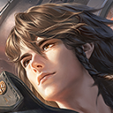

상대 영웅 상세 대응
莱西奥
한 줄: 연막을 빼고, 측면에서.
상대 특성
포킹 사수 계열. 긴 사거리 포킹과 연막, 이동으로 안전하게 딜한다.
라인전 대응
라이시의 포킹 사거리 밖에서 미니언을 먹고, 연막이 빠진 뒤 2스킬로 접근한다.
교전·한타
아군 딜러와 함께 라이시를 측면에서 압박하고, 연막이 끝난 뒤 점사한다.
하지 말 것
라이시의 연막 안에서 시야를 잃고 맞는 것.
상세 스킬
4개중국판 공식 스킬 설명을 한국어로 번역했습니다. 스킬명·쿨다운·수치는 패치에 따라 달라질 수 있으므로 게임 내 최신 설명을 우선하세요. 영웅 이름은 중국판 표기를 유지합니다.
-
패시브
불기·소화응
莱西奥의 기본 공격으로 발사되는 포탄은 원거리 공격 효과를 가지며, 대상의 최대 체력의 1%에 해당하는 추가 피해를 입힙니다. 대포알은 지상 공격 시 적 영웅에 의해 차단될 수 있습니다.
-
1스킬
한정판 강화 폭탄
莱西奥에는 강화된 폭탄이 탑재되어 이후 3개의 기본 공격을 강화합니다. 강화된 기본 공격은 더욱 강력한 범위 공격 효과를 가지며, 대상 최대 체력의 1% + 200/216/232/248/264/280(+15% 물리 공격)의 물리 피해를 추가로 입힙니다.
-
2스킬
전기영웅등장
莱西奥이 연막탄을 던져 연기 구름을 생성합니다. 연기 속의 플레이어와 동료들은 3.5초 동안 투명해집니다. 동시에 莱西奥은 폭발적인 공기파의 도움을 받아 공중으로 솟아오르며 0.8초 동안 지속되는 폭발적인 가속도를 얻습니다. 공중에 있는 동안 이동, 공격, 스킬 사용 및 지형 무시가 가능합니다. 공중에서 기본 공격과 3가지 스킬을 사용하면 공중에 머무는 시간이 늘어납니다. 공중에서 2번 스킬을 사용하면 연막탄을 던지지 않으며, 기본 공격도 적에게 막히지 않습니다.
-
3스킬
일락해연화수
莱西奥은 일시적인 지배력을 얻기 위해 높은 고도로 도약한 후 적 영웅을 추적하고 5개의 미사일을 발사합니다. 각 미사일은 폭발 범위 내의 대상에게 400/500/600(+50% 물리 공격)(+8% 대상 손실 체력)의 물리 피해를 입힙니다. 같은 대상을 미사일로 반복해서 공격할 경우, 다음 미사일의 피해량이 25%로 감소합니다. 최대 한 명의 적 영웅이 잠긴 대상에 대해 하나의 미사일을 공유할 수 있습니다.
탱커 기본: 스킬·유세·콤보·빌드·라인전 원칙은 元流之子 탱커 기본 운영에서 먼저 확인할 수 있습니다. 이 페이지는 莱西奥 상대에 맞춘 대응입니다.